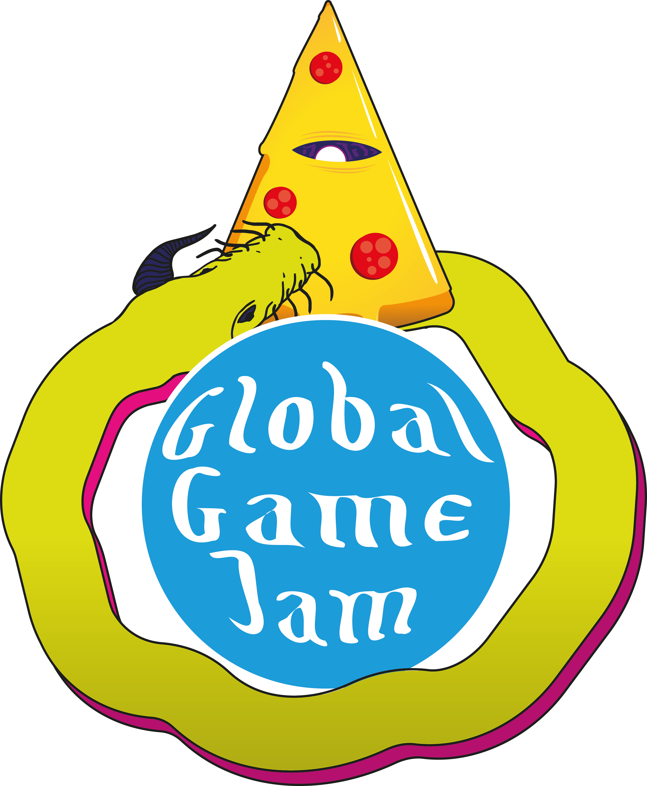
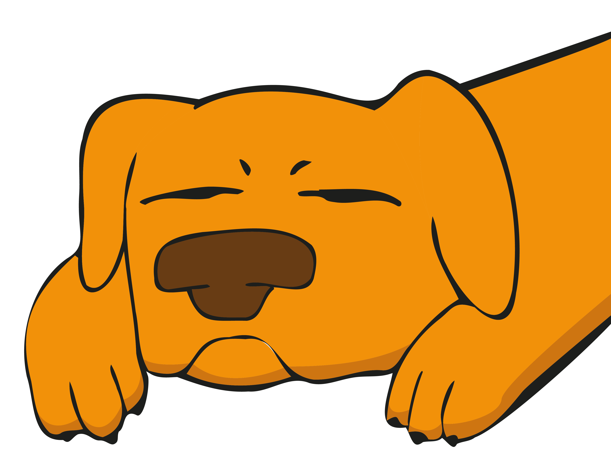

Global Game Jam é um evento gratuito de desenvolvimento de jogos que acontece ao redor do mundo, onde nos dedicamos
por 48 horas para desenvolver um jogo dentro do tema proposto.
Não é necessário conhecimento prévio para participar, somente a vontade
de aprender e criar.
Existem muitas ferramentas para auxiliar o completo iniciante a desenvolver um jogo e haverá mentores
no servidor disponíveis para ajudar no aprendizado de todos.
No servidor do Discord da Vira-Lata Caramelo os participantes podem encontrar companheiros para formar equipes, ou entrar com uma equipe formada. Normalmente uma equipe é composta por um programador, um artista visual e um sonoplasta/músico. Também é possível participar sozinho, sendo uma equipe de uma pessoa só.
A GGJ é conhecida por formar novas amizades e parcerias e é sempre um ótimo desafio intelectual. Os participantes são estimulados a explorar novas tecnologias e tentar novas funções no processo de desenvolvimento de jogos. A GGJ estimula colaboração e não é uma competição. O evento acontecerá no fim de semana do dia 28 à 30 de janeiro
Um agradecimento especial aos nossos apoiadores:


Ao lado está o cronograma que seguiremos durante o evento. Mais abaixo seguem os links para contato. Para participar basta registrar-se no site da Global Game Jam e se apresentar no servidor do Discord Vira-Lata Caramelo.
Telefone: +55 24992057143
Email: gilbertomaywormneto@gmail.com
Interessados em apoiar o projeto, podem encontrar mais informações nesse documento: Proposta de Financiamento.pdf
Também estamos fazendo uma camapanha de crowdfunding no Sharity
| 14:00 - 17:00 | Conversas na #Lounge |
|---|---|
| 17:00 - 18:00 | Anuncios, boas vindas e apresentação do vídeo com o tema |
| ## COMEÇA A GAME JAM ## | |
| 18:00 - 19:00 | Se conhecer / quebrar o gelo / formar grupos |
| 19:00 - 20:00 | Planejamento rápido |
| 20:00 em diante | Começa o desenvolvimento e troca de ideias entre os grupos |
| 09:00 | Socialização e alguns joguinhos online para começar bem o dia :) |
|---|---|
| 11:00 | Checagem se todos os jammers estão devidamente registrados e todos os grupos possuem uma página pro jogo |
| 18:00 | Testar os jogos uns dos outros e socializar |
| 15:00 - 18:00 | Realizar os toques finais no jogo e subí-lo para o website da GGJ |
|---|---|
| 18:00 - 20:00 | Apresentação dos jogos desenvolvidos pelos grupos |